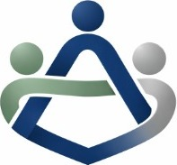

Estruturamos atendimento e cultura com método, clareza e acompanhamento para sua equipe resolver de verdade, fidelizar clientes e gerar resultado.
Conheça nossos PlanosA TR&PC atua com um método próprio para transformar o atendimento na prática: unimos desenvolvimento de pessoas, organização de processos e acompanhamento por métricas, garantindo consistência, humanização e resultados sustentáveis ao longo do tempo.
Agende um diagnóstico e descubra onde sua operação está perdendo clientes e como virar esse jogo com pessoas, processo e método.